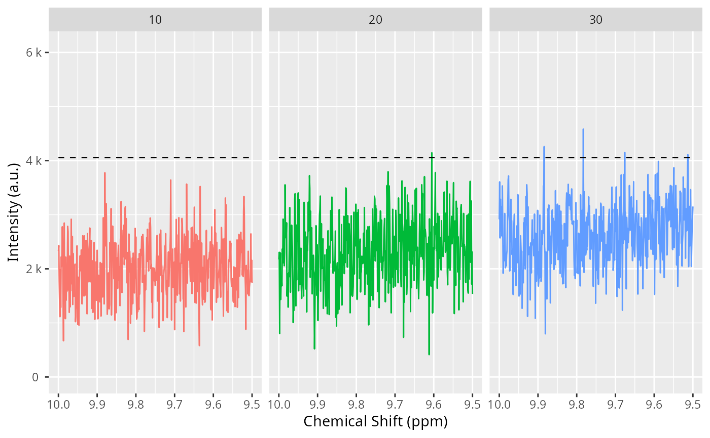

Peak detection for NMR
Examples
dir_to_demo_dataset <- system.file("dataset-demo", package = "AlpsNMR")
nmr_dataset <- nmr_read_samples_dir(dir_to_demo_dataset)
# Low resolution:
dataset_1D <- nmr_interpolate_1D(nmr_dataset, axis = c(min = -0.5, max = 10, by = 0.001))
dataset_1D <- nmr_exclude_region(dataset_1D, exclude = list(water = c(4.7, 5)))
# 1. Optimize peak detection parameters:
range_without_peaks <- c(9.5, 10)
# Choose a region without peaks:
plot(dataset_1D, chemshift_range = range_without_peaks)
baselineThresh <- nmr_baseline_threshold(dataset_1D, range_without_peaks = range_without_peaks)
# Plot to check the baseline estimations
nmr_baseline_threshold_plot(
dataset_1D,
baselineThresh,
NMRExperiment = "all",
chemshift_range = range_without_peaks
)

# 1.Peak detection in the dataset.
peak_data <- nmr_detect_peaks(
dataset_1D,
nDivRange_ppm = 0.1, # Size of detection segments
scales = seq(1, 16, 2),
baselineThresh = NULL, # Minimum peak intensity
SNR.Th = 4, # Signal to noise ratio
range_without_peaks = range_without_peaks, # To estimate
)
sample_10 <- filter(dataset_1D, NMRExperiment == "10")
# nmr_detect_peaks_plot(sample_10, peak_data, "NMRExp_ref")
peaks_detected <- nmr_detect_peaks_tune_snr(
sample_10,
SNR_thresholds = seq(from = 2, to = 3, by = 0.5),
nDivRange_ppm = 0.03,
scales = seq(1, 16, 2),
baselineThresh = 0
)
# 2.Find the reference spectrum to align with.
NMRExp_ref <- nmr_align_find_ref(dataset_1D, peak_data)
# 3.Spectra alignment using the ref spectrum and a maximum alignment shift
nmr_dataset <- nmr_align(dataset_1D, # the dataset
peak_data, # detected peaks
NMRExp_ref = NMRExp_ref, # ref spectrum
maxShift_ppm = 0.0015, # max alignment shift
acceptLostPeak = FALSE
) # lost peaks
# 4.PEAK INTEGRATION (please, consider previous normalization step).
# First we take the peak table from the reference spectrum
peak_data_ref <- filter(peak_data, NMRExperiment == NMRExp_ref)
# Then we integrate spectra considering the peaks from the ref spectrum
nmr_peak_table <- nmr_integrate_peak_positions(
samples = nmr_dataset,
peak_pos_ppm = peak_data_ref$ppm,
peak_width_ppm = NULL
)
#> calculated width for integration is 0.004 ppm
validate_nmr_dataset_peak_table(nmr_peak_table)
#> An nmr_dataset_peak_table (3 samples, and 63 peaks)
# If you wanted the final peak table before machine learning you can run
nmr_peak_table_completed <- get_integration_with_metadata(nmr_peak_table)